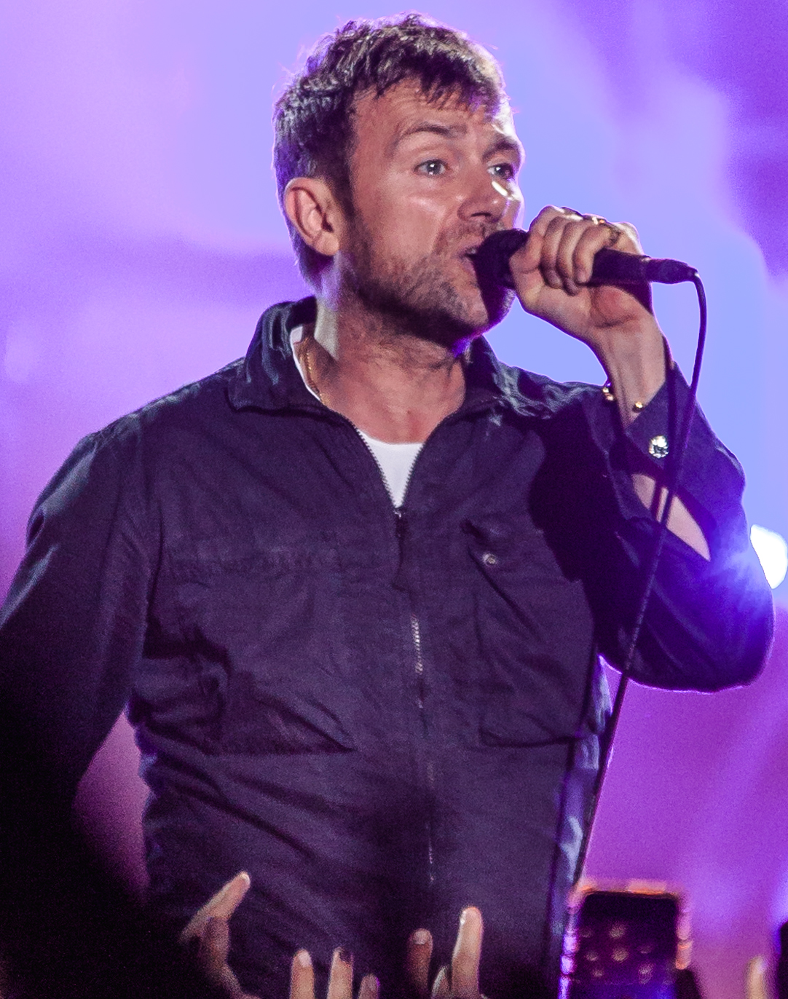

Damon Albarn
Sobre o artista:
Nascido em 23 de março de 1968 em Londres, Damon Albarn ficou conhecido como líder do Blur, um dos principais grupos do britpop. Além do Blur, ele também participou de diversos projetos paralelos, sendo a banda virtual Gorillaz o mais popular.
Multi-instrumentalista e produtor, Damon Albarn lançou seu primeiro álbum solo, Everyday Robots, em abril de 2014. Em 2021, chegou o segundo, The Nearer the Fountain, More Pure the Stream Flows.